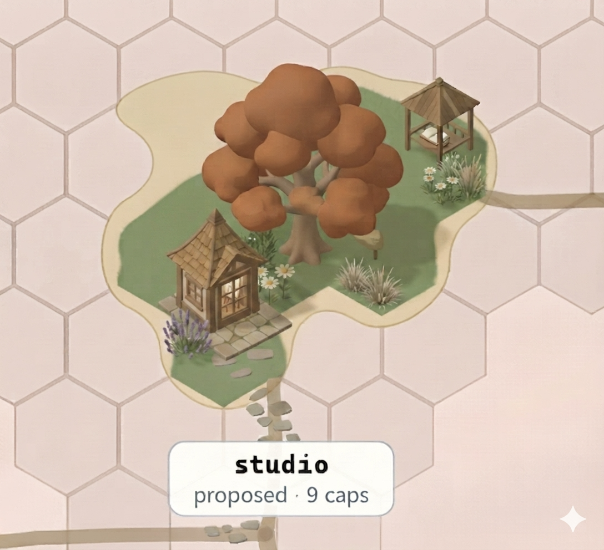

a bloomed daisy — white petals around a gold eye · the criterion is proven
physics checker-green · parts 13 · baked nodes 879
grounded-art · increment 14 · asset review
The owner's "grounded flower, still 1:1" direction (2026-07-21): keep one marker per UAT criterion, verdict read from form, but retire the flat 2D tallFlowerMarks decal for a soft, shaded flower grown through the procedural-architecture factory. Semantics unchanged (form = verdict) — a form lift, not a redefinition. Checker-green, byte-deterministic, one shared island sun. Produced via the TRELLIS pipeline; the maquette is thrown away, the committed re-authored vector is the source of truth (ADR-0217 D2 / ADR-0225).
a bloomed daisy — white petals around a gold eye · the criterion is proven
physics checker-green · parts 13 · baked nodes 879
a closed green bud · the criterion is pending (not yet proven)
physics checker-green · parts 5 · baked nodes 77
a wilted head, muted and nodding off-stem · the criterion is failing
physics checker-green · parts 10 · baked nodes 626
